Cartography
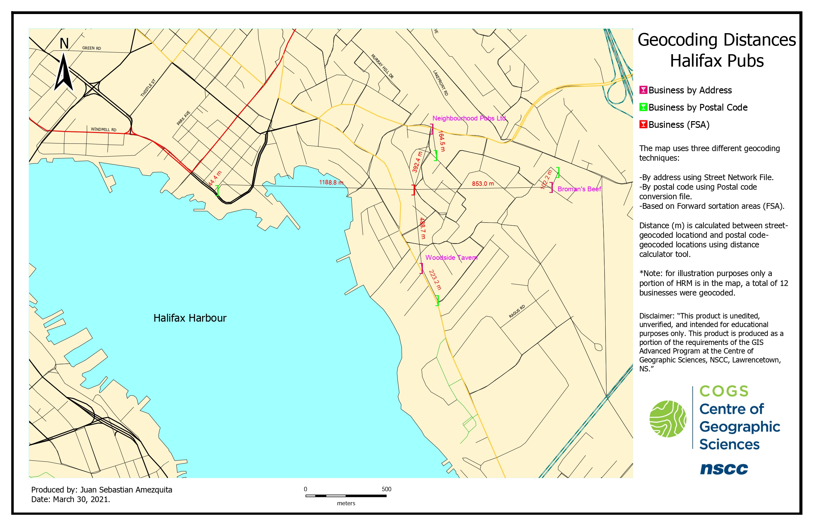
Geocoding distances
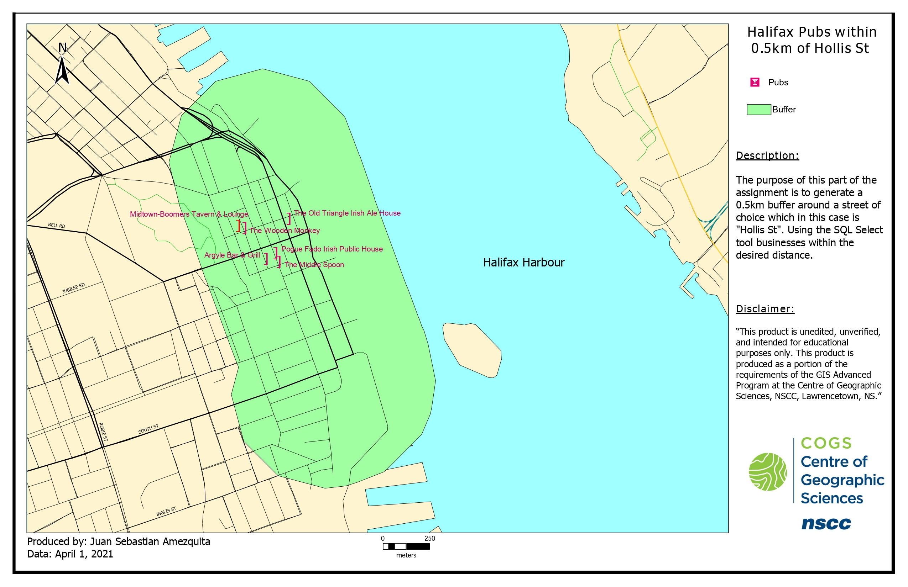
Pubs within a distance
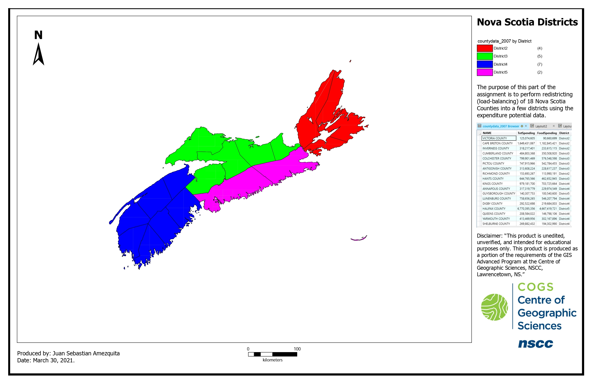
District Classification
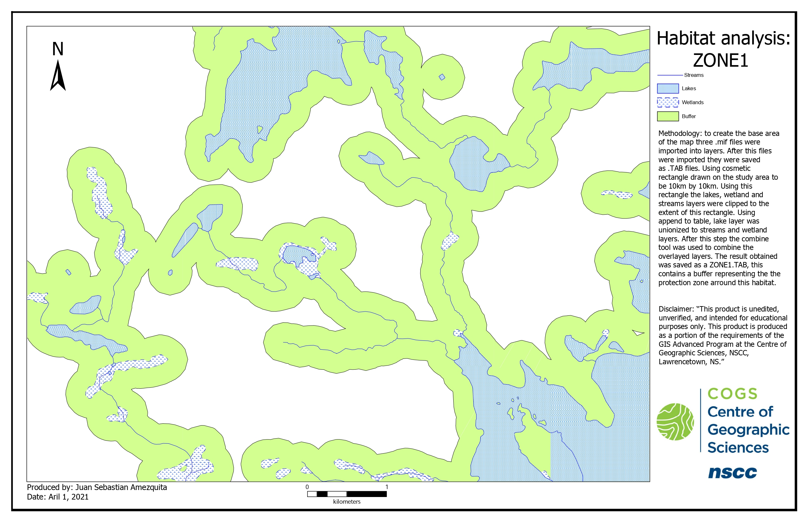
Habitat Analysis 1
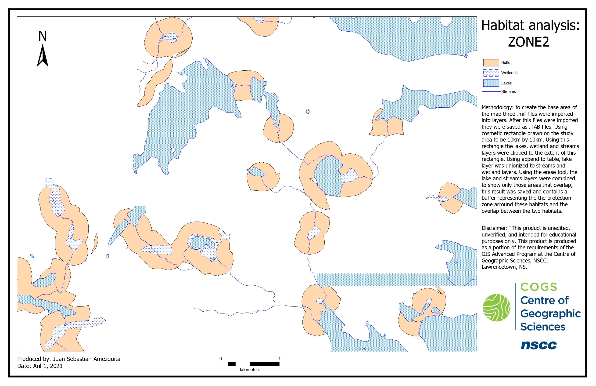
Habitat Analysis 2
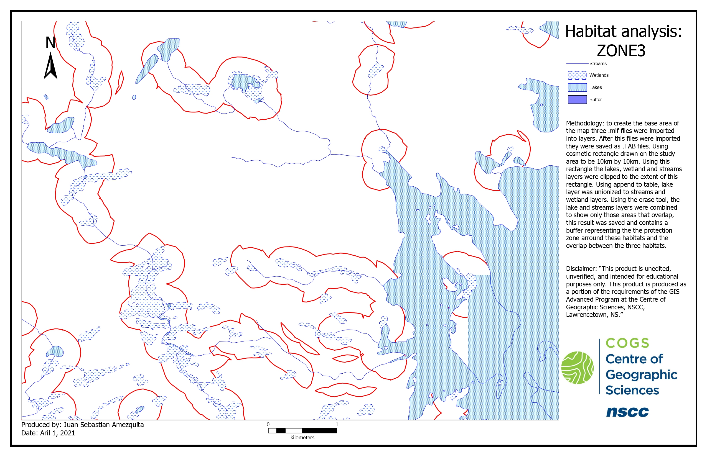
Habitat Analysis 3
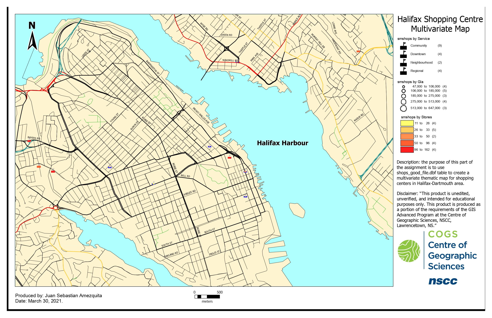
Multivariate Map
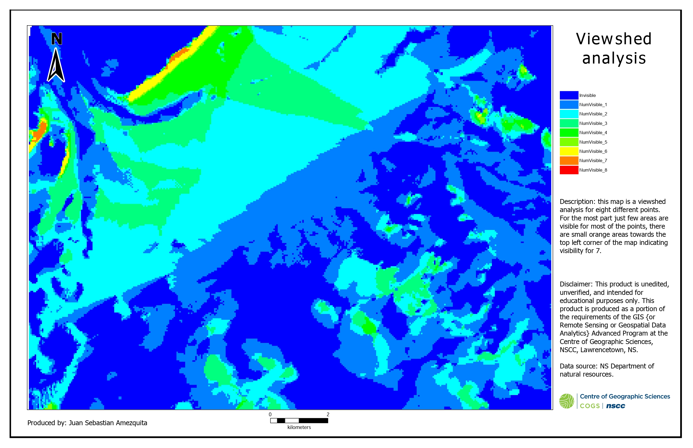
Viewshed Analysis

Location for antennae
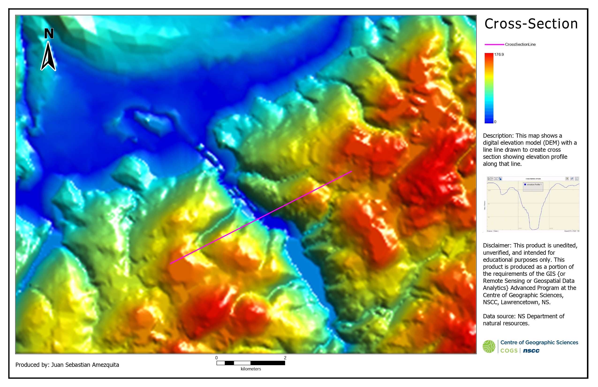
Cross-section
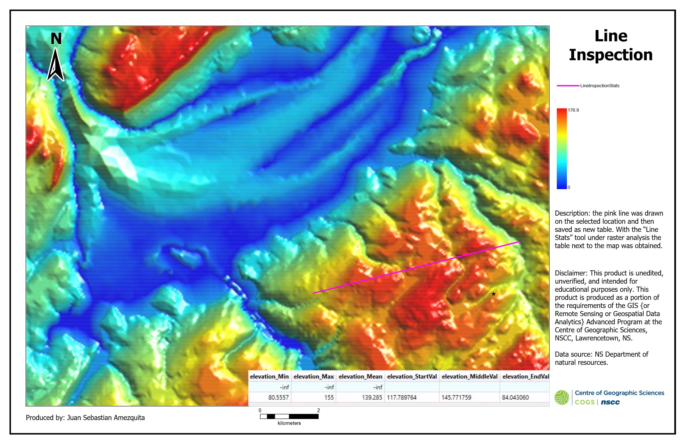
Line Inspection
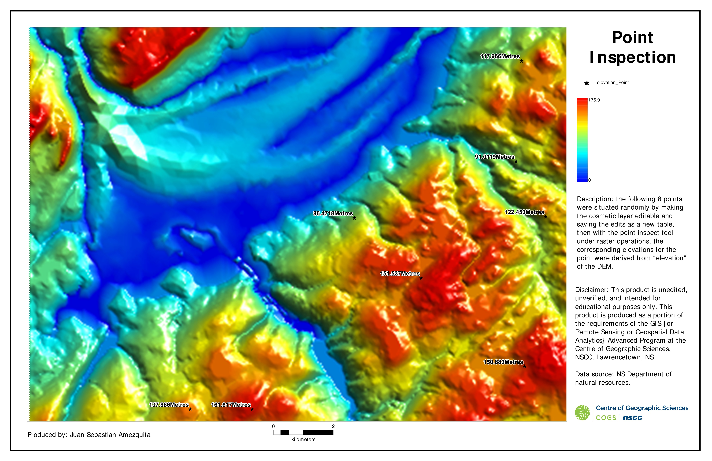
Point Inspection
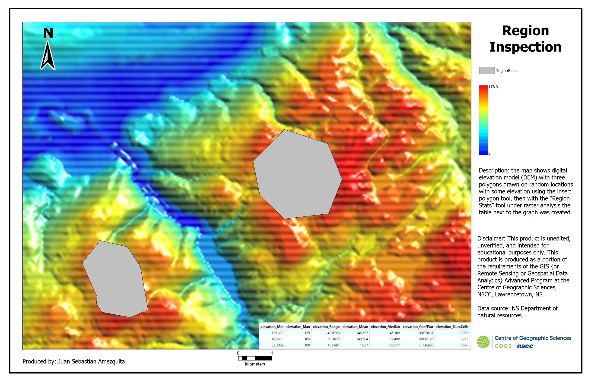
Region Inspection

Image Enhancement
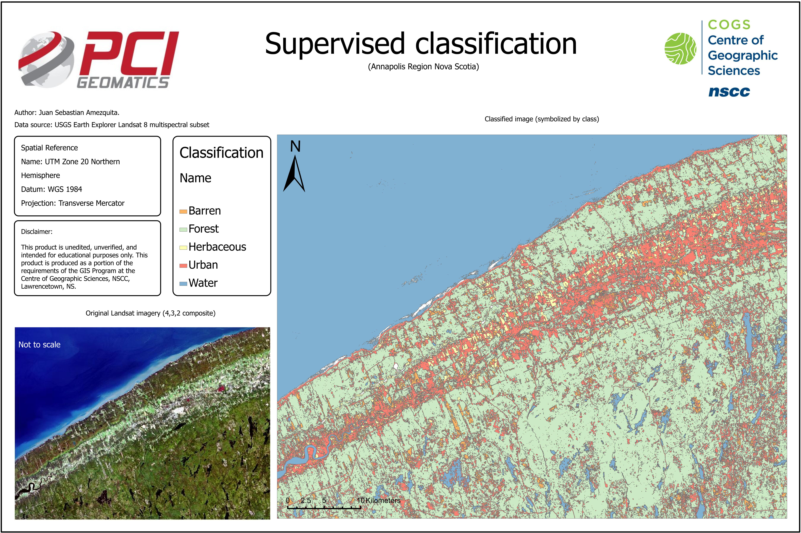
Supervised Classification
*Note: The maps in this portfolio were created using ESRI’s ArcGIS Pro, MapInfo Pro and PCI Geomatica software unless explicitly stated otherwise. Furthermore, these examples were compiled during my time in Centre of Geographic Sciences (COGS) as part of the requirements for the GIS advanced diploma.